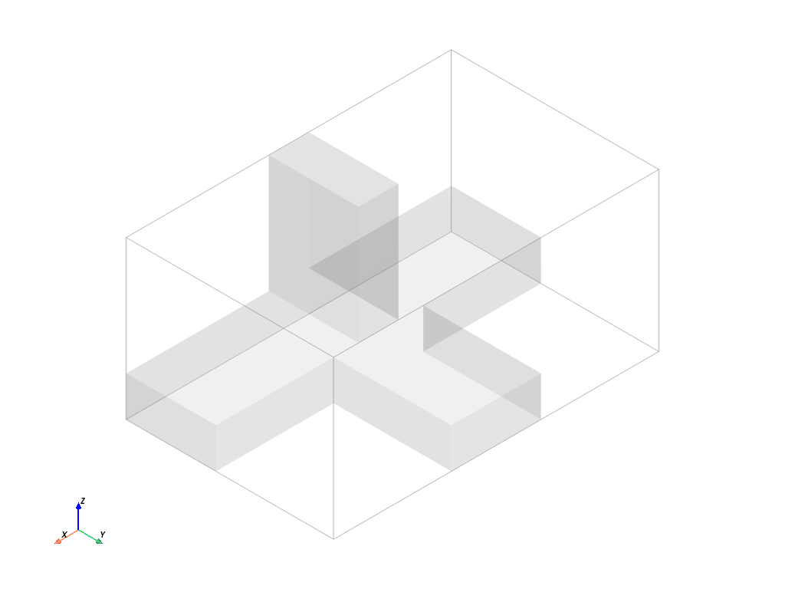
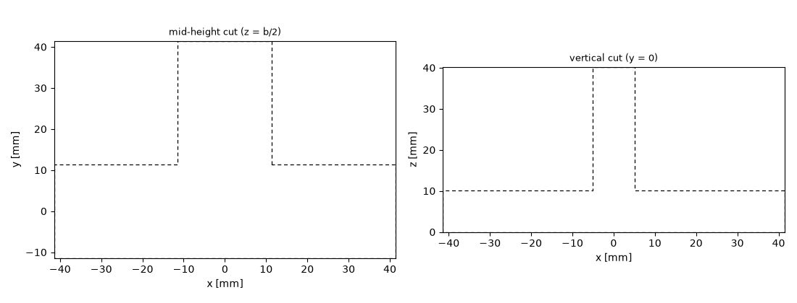
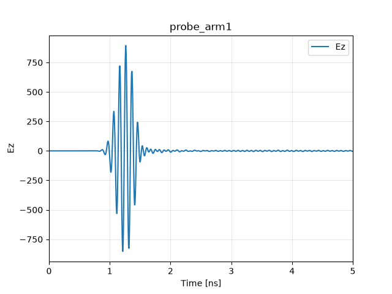
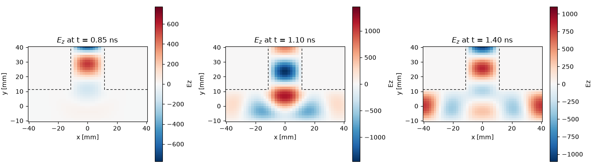
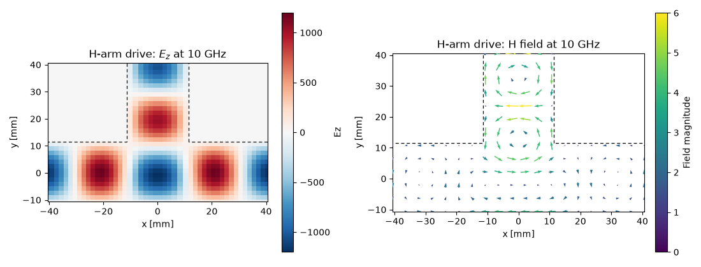
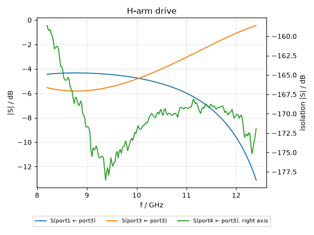
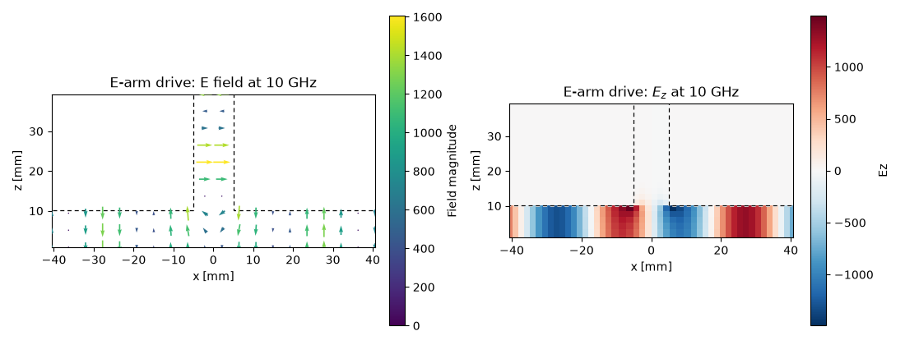

Note
Go to the end to download the full example code.
Field monitors: watching a magic tee work#
Every tutorial so far judged a device from the outside, by its S-parameters. This one goes inside. Field monitors record the electromagnetic field during a driven simulation — as snapshots in time or as phasors at chosen frequencies, on a point, a line, a plane or a volume — and turn a scattering matrix entry into something you can see.
The device is a magic tee, the classic four-port waveguide hybrid: two collinear arms (ports 1 and 2), an H-arm attached in the plane of the broad walls (port 3), and an E-arm attached through a broad wall (port 4). Driving the H-arm splits the power equally and in phase onto the collinear arms; driving the E-arm splits it equally and in anti-phase; and the two drive arms are isolated from each other by symmetry alone. The S-parameters state these facts — the field pictures show why they are true.
The geometry: three bricks, one junction#
All four arms are standard WR-90 rectangular waveguide
(22.86 x 10.16 mm), and the whole tee is carved out of a PEC
background — the same hole-in-metal trick as the coax shield and
the spherical cavity before it. Three air bricks are enough: the
collinear guide along \(x\), the H-arm along \(+y\) in the
same plane, and the E-arm along \(+z\) through the broad wall.
A Union merges them into a single shape whose
overlap region is the junction.
import matplotlib.pyplot as plt
import numpy as np
import magnelio as mio
from magnelio import geo, monitors, plots, ports
a = 22.86e-3 # WR-90 broad wall
b = 10.16e-3 # WR-90 narrow wall
arm = 30.0e-3 # arm length beyond the junction
# collinear arms along x (broad wall in y, TE10 E-field along z)
collinear = geo.Brick(
origin=(-(a / 2 + arm), -a / 2, 0.0), size=(a + 2 * arm, a, b), material="air"
)
# H-arm along +y (broad wall in x, E-field along z)
h_arm = geo.Brick(origin=(-a / 2, 0.0, 0.0), size=(a, a / 2 + arm, b), material="air")
# E-arm along +z (broad wall in y, E-field along x)
e_arm = geo.Brick(origin=(-b / 2, -a / 2, 0.0), size=(b, a, b + arm), material="air")
model = mio.GeometryModel(background="pec")
model.add(geo.Union(collinear, h_arm, e_arm, name="tee"))
GeometryModel(1 shapes, background=PEC)
Since the background is metal, what the 3D view shows is the air inside the tee — the hollow the waves live in — with the E-arm standing up from the broad wall of the collinear guide.
model.plot()

Two cross-sections show the whole device: the mid-height cut contains the collinear arms and the H-arm; the vertical cut along the collinear axis contains the E-arm standing on the broad wall.
fig, axes = plt.subplots(1, 2, figsize=(11, 4.2))
plots.plot_cross_section(model, "z", b / 2, ax=axes[0], title="mid-height cut (z = b/2)")
plots.plot_cross_section(model, "y", 0.0, ax=axes[1], title="vertical cut (y = 0)")
fig.tight_layout()

Ports, mesh, and a band-limited excitation#
One single-mode waveguide port terminates each arm. The excitation
band is the WR-90 design band, 8.2 to 12.4 GHz — and here the lower
limit matters for more than bookkeeping. The TE10 mode of these
arms cuts off at 6.56 GHz, and spectral content near a cut-off
travels with vanishing group velocity: it creeps along the arms and
rings essentially forever. Setting f_min keeps the pulse energy
away from that regime. The faint residue that reaches the cut-off
anyway decays so slowly that we also relax the automatic stop
criterion to 50 dB of port-signal decay and let a gentle time-domain
taper absorb the small truncation remainder — for the −3 dB
splitting curves of a tee, 50 dB is plenty.
model.add_port(ports.PortWaveguide(name="port1", plane="xmin", n_modes=1))
model.add_port(ports.PortWaveguide(name="port2", plane="xmax", n_modes=1))
model.add_port(ports.PortWaveguide(name="port3", plane="ymax", n_modes=1))
model.add_port(ports.PortWaveguide(name="port4", plane="zmax", n_modes=1))
f_min, f_max = 8.2e9, 12.4e9
mesh = mio.Mesh.from_geometry(
model,
mio.MeshControl(min_nodes_per_wavelength=15, min_cell_size=1.59e-3),
f_max=f_max,
)
print(f"grid: {mesh.Nx} x {mesh.Ny} x {mesh.Nz} cells")
mesh | feature planes
mesh | grid lines
mesh | materials
mesh | conformal cells
mesh | PEC masks
mesh | 48 x 32 x 24 cells
grid: 48 x 32 x 24 cells
Declaring monitors#
A monitor is declared before the run and handed to the analysis;
the solver feeds it at every time step. The region is a box given
by two opposite corners — an axis whose corner values coincide
collapses, which is how the same class expresses a volume, a plane,
a line, or a single point. None extends to the domain boundary.
Four monitors cover this tutorial. A point monitor samples the
field over time in one collinear arm — the time-domain “oscilloscope
trace” behind every S-parameter. A plane monitor with an
interval records movie frames of the mid-height cut. And two
MonitorFieldFrequency monitors
accumulate the complex field pattern at a single frequency on the
two cuts from above — a running Fourier transform over the whole
run, one plane for each drive we are going to look at.
A frequency monitor’s .data is in fields per 1 W of incident CW
power — E in V/m, H in A/m, per square root of a watt. The run
divides its own excitation spectrum out of the accumulated transform
to get there, so the numbers are absolute and comparable between
runs, not merely proportional to whatever pulse drove them. Should
you ever want the untouched transform, it stays available as
.data_raw.
zc = b / 2 # mid-height of the collinear and H arms
f0 = 10.0e9 # pattern frequency
probe = monitors.MonitorFieldTime(
corners=((-25e-3, 0.0, zc), (-25e-3, 0.0, zc)),
interval=5e-12,
fields=["Ez"],
name="probe_arm1",
)
movie = monitors.MonitorFieldTime(
corners=((None, None, zc), (None, None, zc)),
interval=50e-12,
fields=["E"],
name="movie_midplane",
)
pattern_h = monitors.MonitorFieldFrequency(
corners=((None, None, zc), (None, None, zc)),
freqs=[f0],
fields=["E", "H"],
name="pattern_midplane",
)
pattern_e = monitors.MonitorFieldFrequency(
corners=((None, 0.0, None), (None, 0.0, None)),
freqs=[f0],
fields=["E"],
name="pattern_vertical",
)
analysis = mio.AnalysisScatteringTD(
mesh=mesh,
f_min=f_min,
monitors=(probe, movie, pattern_h, pattern_e),
verbose=False,
)
Driving the H-arm#
Monitors witness one run: each excitation is its own time-domain simulation, and at its start every monitor is cleared. We therefore run one excitation at a time and harvest the pictures in between — first the H-arm.
result_h = analysis.run(excited=["port3"], port_signal_stop_db=50.0, taper_signals=True)
The point monitor plots straight away — a 0D region over time gives the field at that spot as a trace. The pulse arrives after its trip from the H-arm port through the junction, and the tail that follows is the junction ringing down through all four ports (the run continues well past the window shown, until that tail has decayed by the requested 50 dB):
fig, ax = probe.plot(component="Ez")
ax.set_xlim(0.0, 5.0)

(0.0, 5.0)
The movie monitor holds every frame of the mid-height cut; three of them tell the story. The pulse runs down the H-arm, meets the junction, and leaves through the two collinear arms — with the same sign of \(E_z\) on both sides. The H-arm sits on the mirror plane of the tee, so it can only excite the symmetric combination of the two arms:
fig, axes = plt.subplots(1, 3, figsize=(13.5, 3.8))
for ax, t in zip(axes, (0.85e-9, 1.1e-9, 1.4e-9)):
movie.plot(component="Ez", t=t, plot_type="color", geometry=model, ax=ax)
ax.set_title(f"$E_z$ at t = {t * 1e9:.2f} ns")
fig.tight_layout()

The frequency monitor condenses the whole run into one complex pattern per field component. At 10 GHz the in-phase split shows as a mirror-symmetric \(E_z\) pattern, and the magnetic field — fully in-plane in this cut — curls through the junction accordingly. The standing-wave modulation visible in the H-arm is real physics: an unmatched tee reflects part of the drive back up its feed.
fig, axes = plt.subplots(1, 2, figsize=(11, 4.2))
pattern_h.plot(component="Ez", f=f0, plot_type="color", geometry=model, ax=axes[0])
pattern_h.plot(component="H", f=f0, plot_type="vector", geometry=model, ax=axes[1])
axes[0].set_title("H-arm drive: $E_z$ at 10 GHz")
axes[1].set_title("H-arm drive: H field at 10 GHz")
fig.tight_layout()

The S-parameters say the same thing without pictures: the drive
splits evenly (|S13| a little above −3 dB plus a reflected
share), the two output shares are identical — not approximately,
but to numerical precision, because the mirror symmetry of the
grid enforces it — and nothing reaches the E-arm.
The isolation gets an axis of its own on the right. Drawn on the shared scale it would sit 150 dB below everything else and squeeze the two curves that carry the actual splitting into one line.
fig, ax = result_h.plot_s(("port1", "port3"), ("port3", "port3"))
ax2 = ax.twinx()
ax2.plot(
result_h.f_axis / 1e9,
result_h.db("port4", "port3"),
color="C2",
label="S(port4 ← port3), right axis",
)
ax2.set_ylabel("isolation |S| / dB")
# one combined legend below the axes for both scales
handles = ax.get_lines() + ax2.get_lines()
ax.get_legend().remove()
ax.legend(
handles,
[h.get_label() for h in handles],
loc="upper center",
bbox_to_anchor=(0.5, -0.15),
ncol=3,
fontsize=8,
)
ax.set_title("H-arm drive")
fig.tight_layout()
s13 = result_h.S("port1", "port3")
s23 = result_h.S("port2", "port3")
print(f"max |S13 - S23| (equal split): {np.abs(s13 - s23).max():.1e}")
print(f"max |S43| (E-arm isolation): {result_h.db('port4', 'port3').max():.1f} dB")

max |S13 - S23| (equal split): 1.0e-08
max |S43| (E-arm isolation): -158.6 dB
An isolation of −160 dB is not a converged small number — it is the
numerical floor. The E-arm mode is antisymmetric under the tee’s
mirror plane, the H-arm drive is symmetric, and the Cartesian grid
respects that mirror exactly, so the coupling is zero by symmetry at
any resolution. Contrast this with the match |S33|, which is
protected by nothing and duly poor — a matching post in the junction
would fix it, and a later tutorial will do exactly that.
Driving the E-arm#
The second run feeds port 4. Same monitors, fresh data — and the vertical cut now earns its keep, because this drive lives in that plane:
result_e = analysis.run(excited=["port4"], port_signal_stop_db=50.0, taper_signals=True)
fig, axes = plt.subplots(1, 2, figsize=(11, 4.2))
pattern_e.plot(component="E", f=f0, plot_type="vector", geometry=model, ax=axes[0])
pattern_e.plot(component="Ez", f=f0, plot_type="color", geometry=model, ax=axes[1])
axes[0].set_title("E-arm drive: E field at 10 GHz")
axes[1].set_title("E-arm drive: $E_z$ at 10 GHz")
fig.tight_layout()

The arrows come down the E-arm and split at the junction — and because the E-arm’s field points along the collinear axis, the two half-waves it launches leave with opposite sign: the colour panel shows \(E_z\) flipping between the left and the right arm. This drive produces the antisymmetric combination, the exact counterpart of the H-arm’s symmetric one:
max |S14 + S24| (anti-phase split): 1.4e-08
max |S34| (H-arm isolation): -161.1 dB
Sum and difference: that is the “magic”. Two signals entering the collinear arms emerge at the H-arm added and at the E-arm subtracted, with the two drive arms never talking to each other — the property that makes this junction a monopulse comparator and a balanced mixer workhorse.
Where to go next#
New in this tutorial: field monitors declared on box regions (point
to volume), time snapshots and single-frequency patterns on planes,
and field pictures as the why behind S-parameter statements —
symmetry-protected zeros you can trust at any resolution versus
unprotected quantities like the match that carry discretisation
error. In a notebook, every monitor also offers interact(), a
slider version of plot() — try it in the downloadable version of
this page. For production accuracy you would raise the resolution
and lengthen the arms.
The monitors above lived in RAM and belonged to a single run each. The next tutorial moves simulations into a project on disk: every run keeps its monitor data, volumes stream without filling memory, results reopen after a restart, and the fields go to ParaView.
Total running time of the script: (0 minutes 22.441 seconds)